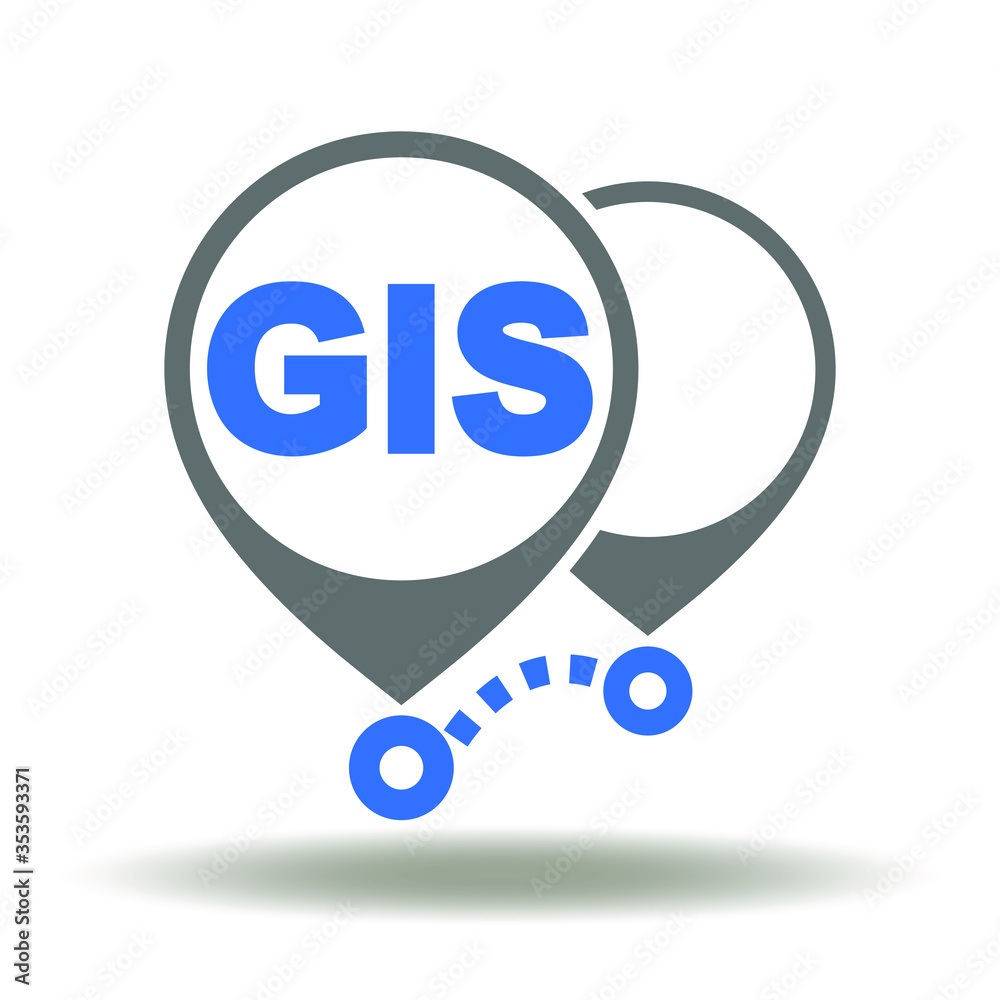
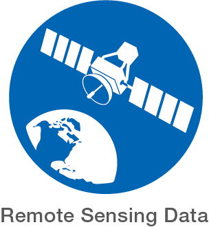

- Skills
-

GIS Software/Web: ArcGIS Pro, ArcGIS 9.3-10.7, ArcGIS Online, QGIS, Leaflet, PostGIS -

Programming: Python, SQL (Beginner), Matlab -

Remote Sensing Software: ENVI, ERDAS IMAGINE, PCI Geomatica, Google Earth Engine (Beginner) -

AI & Analytics: Data analysis & visualization, machine learning & deep learning, Statistical analysis -

Data Collection and Processing tools: Total Station, levelling instrument, all GPS types, UAV, Laser scanners, Civil 3d, Pix4d mapper, Surpac, Trimble business center
- Professional Experience
-
 Graduate Research Assistant (January 2023 - Present)
Graduate Research Assistant (January 2023 - Present)Department of Civil, Environmental,and Geomatics Eng., Florida Atlantic University
Boca Raton, Fl
- Incorporated GIS technology with hydrologic-hydraulic modeling to probabilistically predict the localized flood response to storm events within watersheds across Florida.
- Created high quality maps and conducted geospatial research for the CENTER FOR WATER RESILIENCY AND RISK REDUCTION
- Processed LiDAR-derived topographical data, employed regression analysis to model groundwater behavior, conducted multispectral image classification to identify impervious surfaces, computed soil storage capacities, and effectively utilized Arc Hydro for drainage routing and infrastructure integration within ArcGIS Pro.
- Generated an in-depth flood risk report along with accompanying appendices to present the project's findings comprehensively.
-
Surveyor (Nov. 2022 - January 2023)
Denys Engineers
Accra, Ghana
- Produced a Digital Elevation Model (DEM) for underground pipe installation utilizing drone technology and GPS data.
- Generated a road profile by utilizing GPS technology.
- Established Ground Control Points (GCPs) for all survey activities conducted on-site.
-
Mine Surveyor (Sept. 2020 - August 2021)
AngloGold Ashanti, Iduapriem Limited
Tarkwa, Ghana
- Revised excavation plans and employed Surpac and Datamine software to compute the extracted material volume from mining operations
- Exhibited a strong level of dedication in following all directives provided by my supervisors.
- Utilized Wingtra drones to comprehensively document engineering projects both within and outside the company.
- Collaborated with diverse departments to expand my understanding of various mining operations.
-
Geospatial Analyst (Intern) (Jun. 2019 - Sept 2019)
Egso Company Limited
Tarkwa, Ghana
- Assisted a group of surveyors in collecting data, demarcation and setting-out of boundaries
- Produced site plans and cadastral plans for clients utilizing AutoCAD.
- Created a Utility map for Tarkwa Nsuaem Municipal using ArcMap
- Finished a project on Land Surface Modelling
- BootCamps and Presentations
-
Made a presentation at the South Florida GIS Expo, 2023. My presentation can be accessed:here
- Using deep learning to automatically detect building damages from high resolution remotely sensed images
- Undertook practical courses such as Understanding Machine Learning, Exploring and Analyzing Data in Python, Understanding Data Science, and more